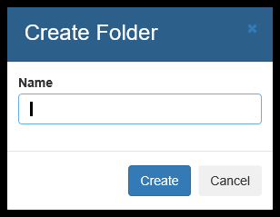
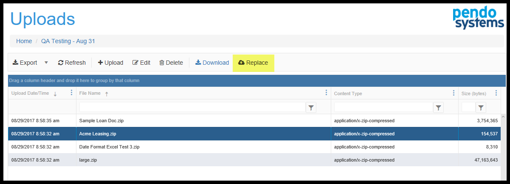

Detailed TOC for Sourcing Data
- Introduction
- Files and Folders Component
- Upload Component
- Remote Sources Component
Introduction
These Components are used to uploaded data to the Platform.
At high level, the Pendo Platform deals with two types of data: Structured and Unstructured. The Platform allows you to search through and explore any combination of Structured and Unstructured data via a Unified Search.
Characteristics of Structured Data
Generally called databases, Structured data first depends on creating a data model – a model of the types of business data that will be recorded and how they will be stored, processed and accessed. This includes carefully defining what fields of data will be stored and how that data will be stored:
- Tables and Fields are defined and named.
- Tables are collections of fields.
- Fields are composed of specific data types such as numeric, currency, alphabetic, name, date, address.
Field characteristics are specified such as the number of decimals stored, if no decimals are stored, number of characteristics in a string field and so on.
- Restrictions can be added on the data input (number of characters; restricted to certain terms such as Mr., Ms. or Dr. M or F).
As you can see, databases need to be well organized, i.e. Structured, before any data is put in them.
NOTE: When structured data in brought in the Platform, the database terms Table and Fields are replaced with the metadata terms Entities and Attributes.
Characteristics of Unstructured Data
Unstructured data files often include text, tables and even multimedia content. Examples include e-mail messages, word processing documents, spreadsheets, presentations, webpages and many other kinds of business documents. Note that some of these files may have an internal structures: an email has a To, From, CC,BCC, Date and Body fields. Or a word processing document may have paragraphs and tables. However, they are still considered Unstructured or Semi-structured because the data they contain doesn't fit neatly in a database.
Experts estimate that 80 to 90 percent of the data in any organization is Unstructured and the amount of Unstructured data in enterprises is growing significantly — often many times faster than Structured databases.
The Platform allows you to search through, explore and extract any combination of Structured and Unstructured data.
IMPORTANT CONCEPTS: Unstructured data can often contain vital information that:
1. does not exist anywhere else
2. is needed to compare to data that exists elsewhere
3. is needed to feed data to an existing system, such as a more complete risk model.
4. has data that you wish to extract and make into structured data
5. all of the above
The Platform allows for:
- Searching the content of any of these files in the same way as searching for anything else on the Pendo Platform. A Unified Search on the Pendo Platform looks through ALL data, unstructured or structured.
- Data can be extracted from an unstructured source and made to be structured. As an example, you may have thousands or millions of complex spreadsheets and want to retrieve a few targeted pieces of information from each of these spreadsheets, or a hundreds of PDFs that have tables containing important information. By extracting this information, it can be sent to other systems in the form of a file, database, etc.
Sourcing Data
Files and Folders Component
Usage
This component is a directory management service within the Workspace and is managed by the Platform.
You can Create folders (and sub-folders) and then copy files into these folders.
- Files uploaded here are actual copies of the files, maintaining NO LINK to the original source location.
- Folders you create here can be imported from here, automatically creating a Document Set and indexing the data. You do not have to create a Remote Source and then import it.
- Duplicate file detection - when you upload a file with the same name as a file already in the folder, ‘-copy’ is added to the end of the imported file name.
- You can download the files that have been uploaded to a Users' computer.
- Data can be 'refreshed'. To update a file(s) (perhaps a newer version of the file), just Delete it from the folder and upload the newer version. As you will see later, Reindexing this 'refreshed' or updated Document Set will reimport all files being processed and update the metadata in the Platform.
NOTES: The process of 'Uploading' is followed by the process of 'Importing'.
- Uploading places a copy of the file itself under the control of the Platform but does nothing with the file.
- There is no link between the original source file and the uploaded file. You may delete a file here, and the original file will not be touched.
- Importing the files process them, creating metadata and allowing you to visualize download and extract information from these files.
- .zip and .csv files are not yet supported in ‘Files and Folders’. Please continue to Upload them and then Create and Import a Remote Source.
- When you export a Workspace you will be able to optionally export the contents of 'Files and Folders', making migration of a Workspace to a different Workspace, even on a different server, potentially much less labor intensive. Exporting and Importing a Workspace is covered in the Platform Administration Manual.
How To Use
Click on 'Explore' or the words 'Files and Folders' on the blue component tile. You will be brought to the main grid.
Creating / Deleting Folder
When you see the grid initially, only the 'Create Folder' and 'Refresh' options are available. Click the 'Create' button. In the popup, provide a name for the folder and click 'Create'. Note that you can create a Folder inside of another Folder.

When you highlight a Folder, the 'Delete' and 'Import' options become available.

To Delete a Folder, highlight it and click the Delete option. A popup appears, asking you to verify your command to delete a Folder. Note that any files or sub-folders that are in that folder will be deleted. This is your chance to change your mind!
HINT: Highlighting vs. Selecting a Folder.
To highlight a Folder, click on the blank space after the Folder Name.
If you click icon in the 'Kind' column or if you click on the Folder name, you are selecting the folder instead of highlighting it. Selecting a folder opens that folder and brings you to the next grid down showing you the contents of the Folder.
Uploading / Deleting files
Clicking of the icon in the 'Kind' column or the Folder name selects the folder and brings you another grid.
When you first arrive on this grid, only the 'Upload Files, 'Create Folder', 'Refresh' and 'Up to Parent' options are available. After highlighting a file by clicking anywhere on a row, the 'Download' and 'Delete' options can be seen.
- To Create a sub-folder, click 'Create Folder'. The behavior is the same as above.
- To Delete a file, highlight the file and click 'Delete'.
- To move back up to the parent folder, click 'Up to Parent'.
- To upload one or more files, click 'Upload Files'. You will see the following popup or one very similar, depending on the WEB browser you are using. The Platform currently runs in MS IE 11, MS Edge and Safari.
Note the 3 highlighted sections.
- If you wish to use any file explorer, such as MS Explorer or MAC File Finder, you may do so. Using the standard selection methods for your computer, you may select one or more files and 'drag and drop' them to the area that says' Drop File Here'.
- typing in the blank box or clicking the 'Browse' button opens up a standard dialogue box, allowing you to move around an find the file or files you wish to upload into the folder.
The result is this:

Note: As the warning by the number 1 indicates, this component is limited to uploading 500 files at a time. You can upload more than 500, just do it 500 files or less increments.
- You can select to upload, Cancel or Remove and individual file is section 2. -Section 3 allows you to Upload All, Cancel All or Remove All files from the queue.
Once you start uploading, there is a progress bar for each file as well as a status. the status will either be:
- Blank - not processed.
- A check - all went well
- A X - something went wrong with this file and it is not uploaded.
When you are done uploading, click 'Up To Parent' so that you can proceed to Import your data.
Importing Folders
Once you have uploaded files into folder, you will want to Import that data in the folders so that it can be searched and data can be extracted and organized. Select the Folder that has the data you wish to import into the Platform and click Import.

You will go to the Import screen.

The Platform will:
- look in the Folder you created
- analyze the files and display them to you sorted by file type. You do not need to have only one file type in the target directory, however you must only select one type of file to be imported at a time. For instance, if you have both word processing and spreadsheet files, you would select one of the other for any given Import. Variation of a file type, such as .doc and .docx can be imported at the same time as they are the same mime type.
- Import screen details:
- In Area 1, you may, optionally, enter a filter for the file types you wish, e.g. pdf. This is useful when the destination of the path contains many different types of files.
- In Area 2, you may easily select/deselect all files types that were discovered.
- In Area 3, you may select any combination of the file types you wish brought into the Platform, keeping in mind the warings above. Think of .doc and .docx, not .doc and .xls
- In Area 4, you may override the Pendo Platform generated Name and or Description. The Name here will be the name of the Document Set that will be created. The default name appends the word 'Folder' to the front of your folder's name. For example, if the folder name was 'Month End Leasing Reports from Acme', the default Name will be 'Folder Month End Leasing Reports from Acme'. This is meant to help you remember that the source of data for the Document Set was a folder from 'Files and Folders'. Hint: you may make the Name user friendly with upper and lower case letters, spaces and special characters like ‘-_ and make the Description useful – perhaps describe the data being brought in. For example ‘Loan Collateral spreadsheets from xxx business unit from date 1 through date 2.’
- When dealing with Unstructured Data or existing Document Sets the Batch Size is the number of files that will be brought into memory at one time.
The ideal batch size depends on both the amount of memory in the server and the type and sizes of data with which you are dealing. The smaller the individual file sizes and the more memory your server has, the bigger the Batch Size can be.
The Grid Size determines the number of simultaneous threads that will be used to process the data. The ideal size will depend on the number of processors your server has and what else may be running on the server at the same time. The Platform will look at your entries and validate them, learning more about each specific data set over time. You will also get notified about Grid and Batch sizes when you Attach A Document Class in order to extract the mapped data to the Target Entity.
If the entered numbers are too big, a maximum recommendation will be shown. You may overwrite the Platform recommendations, but be aware that this increases the chance that the server will crash. - In Area 6, you may select any of the optional import Plugins that have been made available to you. Select only those Plugins that are relevant to the projects being worked on in a particular Workspace. Some Plugins will result in additional space being used and increased Indexing times. You will also be able to change your selections later via the Edit screens for Unstructured Data Sets. IMPORTANT NOTE: When importing Unstructured Data Sets, you must select at least one Plugin that is a Document Builder so that the Indexing will work. Notice that each Plugin indicates what type of Plugin it is. When in doubt, please contact Client Services. As a backup, you may select Tika Document Builder as you can always change your mind and select a different or additional Document Builder later.
- In Area 7, when ready to import data and create metadata, Click the 'Create Document Set' button.
- In Area 1, you may, optionally, enter a filter for the file types you wish, e.g. pdf. This is useful when the destination of the path contains many different types of files.
After the files are imported, you will be brought to the Documents Sets Component
Upload Component
Note: This component will be phased out and replaced with the Files and Folders component which will have increased capabilities. Note also that all files uploaded must be zipped files.
Usage
This is where flat files (a.k.a. delimited files) or zipped Word, PDF and Excel files that are accessible from your PC is uploaded into the Platform's server. This is a required step before theses files can become a Remote Source.
How To Use
Click on the word Explore or Uploads in the Uploads Component. This takes you to the Uploads grid.
Next, click on +UPLOAD. This opens the Upload dialogue screen.

In Area 1, you have a choice of dragging the file(s) you wish to upload and/or clicking the 'Choose Files' button and opening a standard selection screen. If you click Choose File, just navigate to the location of the file, highlight it and click the Open button.
Repeat as needed to select as many files as you wish to upload. Note that zipped files that contain MS Word, MS Excel and/or PDF files can be uploaded and subsequently processed as a valid file while creating a Data Source.
In Area 2 you will see a list of all the files that will be processed. You may elect to upload, delete (from the queue, not the source file) or cancel an upload that is in progress.
In Area 3, you can upload, delete (from the queue, not the source file) or cancel an upload that is in progress all of the files listed.
Downloading Files
Any file that was Uploaded can be downloaded to your local PC

Replace a File
This allows you to replace a previously Uploaded File without deleting.

You may replace a file that was Uploaded, Imported and made into a Document Set. This process updates the contents of the Document Set without the user having to delete anything or modify mappings of a Document Class. This may be a ‘refresh’ or update of the same file or a complete replacement file of a different name. The file must be of the same type as the original, that is if the original files was .csv, then the replacement must be a .csv, if the original was a .zip of Excel files, then the replacement must be a zip of Excel files and so on. The process is:
- Create a file and make a zip of it.
- Upload this file in Uploads.
- Create a Remote Source of Type=File using that file.
- Import the Remote Source.
- Go to Document Sets, Search the new Doc Set and visualize the file.
- Go to Uploads.
- Select the original Upload by highlighting it and then click the "Replace" button.
- Navigate to the new file, click the Replace button.
- Go to Document Sets.
- Highlight the Document Set in question and click 'Reindex Selected'.
Remote Sources Component
(Formerly Data Sources).
Usage
The Remote Sources Component is currently where all links are made to:
- Uploaded zip data files such as Word, Excel and PDF.
- JDBC compliant databases such as Oracle, SQL.
- Files that were placed in a directory on the Platform's server by your internal staff.
When the Remote Source is Imported, the Platform:
- creates Full-Text Indexes automatically making all data available for Unified Searching.
- creates all Metadata (Entities, Attributes and Document Sets).
Both structured data (coming from flat files such as .csv files or from any JDBC compliant database such as MYSQL©, MSSQL©, Oracle©, postgres©, etc.) and unstructured data (PDF©, MS Excel©, any MS Office© files, iWork’s, RTF, email, audio, image, etc.) can be brought onto the Platform. If you need support for a file type that is not currently available, please contact Client Services.
During actual importing of data, you will have the ability to invoke various Plugins that may be useful to your project. You can also invoke these Plugins when Editing a Document Set on the Indexing Plugin Tab.
Structured Data
Definitions
Structured data refers to any data that resides in a database, including relational databases and non-relational databases.
Examples
Type=JDBC. Example for connecting to a JDBC database:
Use this when you wish to connect to a specific JDBC compliant database. Note that this is different than Type=JDBC Query, which is used when you wish to write your own SQL to connect to multipole databases or select only certain fields from certain tables. JDBC Query is covered below
- Click Explore or the words Remote Sources in the Remote Sources component of the Workspace.
- You will land on the Remote Source grid, showing all existing data sources in your Workspace.
While on viewing the Remote Source Grid, Click Create. You will then see the Create Data Source screen.
- Note that the Create and Edit screens are the same except for their title.
- Note that there are several tabs of information. Only the fields on the first tab are all required. All other information is optional.
We will use the Edit screens below.
Source/Access Tab

This tab’s fields are all required.
After giving a name to your Remote Source, select JDBC for the Type, and provide the URL, username and password required to access your data. This information must be provided by your administrator.
Documentation Tab
- The Documentation tab provides free form fields and may be used as you please.
- Data Lineage is a very large field. In this particular case, the word lineage refers to describing what was needed to bring this Data Source onto the Pendo Platform. Beyond any descriptive wording, you can also store SQL scripts, Data Joins or other activity that was used to make this Data Source.
- Lineage can also refer to the process of determining the sources of the data held within a given database – where did the data (price, policy type, location, transaction, etc.) come from? This can be accomplished by bringing in various source systems, comparing them, and searching for matches.
Other Notes Tab
Provides another free form Notes field separate from Internal Documentation.
Business Info Tab
Provides a place for business department/unit Information.
Technology Info Tab
Provides a place for technology department/unit Information.
Import Entities and Attributes
Highlight the Data Source that you want converted and Click Import. You are now on the Import Entities page.

Here you select a Data Source that you want imported and converted to Entities onto the PD3P.
When a JDBC compliant database is imported/converted, you will be able to select the specific tables you wish to deal with as opposed to automatically bringing all the tables into the Pendo Platform.
1. In Area 1, you may optionally filter table names and/or select all / deselect all table.
2. In Area 2, you will see a lists of all the potential new Entities that the Pendo Platform can create. You can easily select only the desired Entities you wish to create.
3A. Here you will select the purpose of the new Entity by indicating if the new Entity will be a Source or a Target.
A Source is an existing database that is already populated with data, usually from production systems. Source Entities are read-only.
A Target is a newly created database that is empty. The purpose of Importing and creating such Entities is to provide a place into which mapped data from a _Document Class project will go. The Entity(ies) will be populated by specified data that originates from any number of Document Sets comprised of files such as spreadsheets, PDFs, email, etc. The population of Target Entities and its associated Attributes is part of the functionality of the Document Classes Component, the purpose of which is to create structured data from unstructured data.
3B-D. Here you will accept or modify the naming of the metadata for the new Entity. By default, the New Entity Name is the same as the table name in the existing database. You may override the system generated Entity Name into something more user friendly by using spaces, upper and lower case and special characters. Both the API Endpoint and the API Endpoint(plural) can be altered. This is for technical people who will be using the Platform APIs. No spaces or special characters are allowed for any endpoint name. The default for this field is Source.
Remember to do this for every new Entity, not just the first one.
3E. Batch and Grid Size: You will see a section of the screen that looks like this:
Batch Size - when dealing with Importing Structured Data, is how many rows of data will be brought into memory at once.
The ideal Batch Size depends on the amount of memory in the server and the type of data with which you are dealing. When the Platform loads the rows from an Entity , it is done in a batch and then written back to the index. If you have 4 million rows with 10 columns, then you may want a big batch size (~1000) to improve performance. If you have 4 million rows with 999 columns, you want a smaller batch size (~20) or you will risk memory issues.
Grid Size - when dealing with Importing Structured Data, is how many simultaneous threads will be used by the server processors to deal with the data. The ideal size depends on the number of processors in your server and what else may be running on the server.
For 'Skip headers records', you may elect to import or ignore header information for Data Source Type=File.
4. This sectional allows you to optionally change the New Attribute Name, (Data) Type, add Internal Documentation Notes and change the Attribute API Name. You may do this for selected or all fields, as desired.
5. When you are done with the above items, Click the Import All Selected Entities/Attributes button (number 11 in above image).
Type=JDBC Query. Example for writing your own SQL to select data for Importing.
Advanced: If you wish to write your own SQL to control databases and/or fields that are to be imported, you would use this selection. Only the differences in creating a Type=JDBC Data Source are described below. The Create screen and the first tab of the Edit screens are identical except for a place to write the SQL as highlighted below.
Instead of selecting one database and the choosing which tables to import, this option gives you full control of joins, aliasing, field selection, etc. You must know SQL in order to use this option.
Examples of what you might put in the SQL box:
- select
*from databaseA a, databaseB b where a.zipcode = b.zipcode - select
*from database1 d JOIN database2 s ON d.stateOrProvCode = s.stateCode; - select yearOf as y, timeOfDay as t, stateOrProvCode as s, fabricDye as f from database1 where stateOrProvCode like 'A%';
WARNING When you go to Import this Date Source, it is possible that you have selected tables from different databases that have the exact same field names. You will need to identify these and rename the Attribute Name and API Name so that each Attribute is unique. The Platform will prevent duplicate Attribute naming within a given and Entity.
You may then proceed from Documentation Tab in the above Type=JDBC example.
Type=File. Example of Flat File
Here we will point out the minor differences when dealing with a flat file instead of a JDBC compliant database. Flat files are single files with data that are delimited in some way such as with commas, pipes, tabs, etc. You would again click Create in the Remote Sources screen as you did above. You will then see the _Create Source screen.
Only the differences in creating a Type= File Data Source are described below. The Create screen and the first tab of the Edit screens are identical.
Highlight the flat file you click Edit.

After providing a Data Source Name, select Type to be File and specify the data separator (e.g. comma, slash, tab) and a quote delimiter (e.g. ‘or “). Click Save when done.
You may then proceed from Documentation Tab in the above JDBC compliant databases example:.
Unstructured Data
The phrase unstructured data usually refers to information that doesn't reside in a traditional row-column database. This refers such things as PDF©, MS Excel©, any MS Office© files, iWork’s, RTF, email, audio, image, etc. On the Platform, groups of unstructured data files are grouped in Document Sets.
Type=Folder. Example of Unstructured Data Set
For the most part, Document Sets work in a very similar workflow as Structured Data, but there are several key differences on the Source/Access tab and in Importing.
Create / Edit
Unstructured data is usually a collection of many files, perhaps of the same type (e.g. PDF files) or a mixture of different file types.
First, give your Document Set a Name, select Folder from the Type drop down and enter the location of the files you wish to import. All the other tabs work the same as above, allowing you to enter lineage, notes and data owner information.
Import Documents Sets
Select the data source containing the Document Set data you wish to import.
- The Platform will look at the location of the files and display them to you sorted by file type and show the number of each type of file. You do not need to have only one file type in the target directory, however you must only select one type of file to be imported at a time. For instance, if you have both word processing and spreadsheet files, you would select one of the other for any given Import. Variation of a file type, such as .doc and .docx can be imported at the same time as they are the same mime type.
- If there are other file types that you need imported that do not display, please contact Client Services via https://pendosystems.zendesk.com and make a request. Hundreds of file types can supported, but not all may have been implemented or configured during your installation. Support of additional file types are done on an ‘as needed’ basis.
Import screen details:
- In Area 1, you may, optionally, enter a filter for the file types you wish, e.g. pdf. This is useful when the destination of the path contains many different types of files.
- In Area 2, you may easily select/deselect all files types that were discovered.
- In Area 3, you may select any combination of the file types you wish brought into the Platform.
- In Area 4, you may override the Pendo Platform generated Name, API Endpoint and or Description. Hint – make the Name user friendly with upper and lower case letters, spaces and special characters like ‘-_ and make the Description useful – perhaps describe the data being brought in. For example ‘Loan Collateral spreadsheets from xxx business unit from date1 through date2.’
In Area 5, you may select any of the optional import Plugins that have been made available to you. Select only those Plugins that are relevant to the projects being worked on in a particular Workspace. Some Plugins will result in additional space being used and increased Indexing times. You will also be able to change your selections later via the Edit screens for Unstructured Data Sets.
IMPORTANT NOTE: When importing Unstructured Data Sets, you must select at least one Plugin that is a Document Builder so that the Indexing will work. Notice that each Plugin indicates what type of Plugin it is. When in doubt, please contact Client Services. As a backup, you may select Tika Document Builder as you can always change your mind and select a different or additional Document Builder later.
- In Area 6, when ready to import data and create metadata, Click the button.
After the files are imported, you will be brought to the Documents Sets Component
IMPORTANT NOTE 2: Please note that the file types that are imported to a Document Set can also be controlled from the Document Set Component itself. See Document Sets, Edit screen for further details.